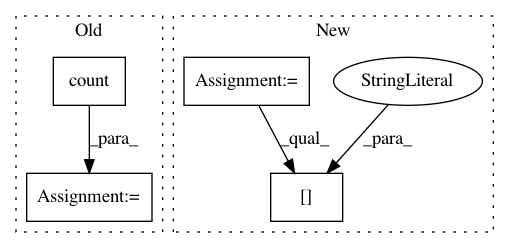

3dece408885064d14883eb38547da2729950c50c,api/data_refinery_api/views.py,Stats,_get_job_stats,#Stats#Any#Any#,1216
Before Change
return total_size["size_in_bytes__sum"] if total_size["size_in_bytes__sum"] else 0
def _get_job_stats(self, jobs, range_param):
result = {
"total": jobs.count(),
"pending": jobs.filter(start_time__isnull=True).count(),
"completed": jobs.filter(end_time__isnull=False).count(),
"successful": jobs.filter(success=True).count(),
"open": jobs.filter(start_time__isnull=False, end_time__isnull=True, success__isnull=True).count(),
// via https://stackoverflow.com/questions/32520655/get-average-of-difference-of-datetime-fields-in-django
"average_time": jobs.filter(start_time__isnull=False, end_time__isnull=False, success=True).aggregate(
average_time=Avg(F("end_time") - F("start_time")))["average_time"]
}
if not result["average_time"]:
result["average_time"] = 0
else:
After Change
return total_size["size_in_bytes__sum"] if total_size["size_in_bytes__sum"] else 0
def _get_job_stats(self, jobs, range_param):
result = jobs.aggregate(
total=Count("id"),
pending=Count("id", filter=Q(start_time__isnull=True)),
completed=Count("id", filter=Q(end_time__isnull=False)),
successful=Count("id", filter=Q(success=True)),
open=Count("id", filter=Q(start_time__isnull=False, end_time__isnull=True, success__isnull=True)),
)
// via https://stackoverflow.com/questions/32520655/get-average-of-difference-of-datetime-fields-in-django
result["average_time"] = jobs.filter(start_time__isnull=False, end_time__isnull=False, success=True).aggregate(
average_time=Avg(F("end_time") - F("start_time")))["average_time"]
if not result["average_time"]:
In pattern: SUPERPATTERN
Frequency: 4
Non-data size: 4
Instances
Project Name: AlexsLemonade/refinebio
Commit Name: 3dece408885064d14883eb38547da2729950c50c
Time: 2019-02-28
Author: arielsvn@gmail.com
File Name: api/data_refinery_api/views.py
Class Name: Stats
Method Name: _get_job_stats
Project Name: AlexsLemonade/refinebio
Commit Name: e5680383654cdb3ca62ac1670c16bb603863c8e7
Time: 2019-08-12
Author: arielsvn@gmail.com
File Name: common/data_refinery_common/models/models.py
Class Name: Experiment
Method Name: update_num_samples
Project Name: polyaxon/polyaxon
Commit Name: 2359ff5795f69d029643188e5fba76b90bfa53c4
Time: 2020-04-19
Author: mouradmourafiq@gmail.com
File Name: core/polyaxon/polyboard/events/schemas.py
Class Name: V1Events
Method Name: get_summary
Project Name: chakki-works/doccano
Commit Name: 49d41416e440926f0a9a8243b4d77f6f5468efe9
Time: 2019-03-12
Author: light.tree.1.13@gmail.com
File Name: app/server/api.py
Class Name: StatisticsAPI
Method Name: progress